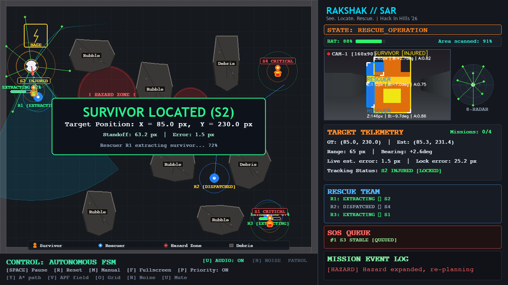
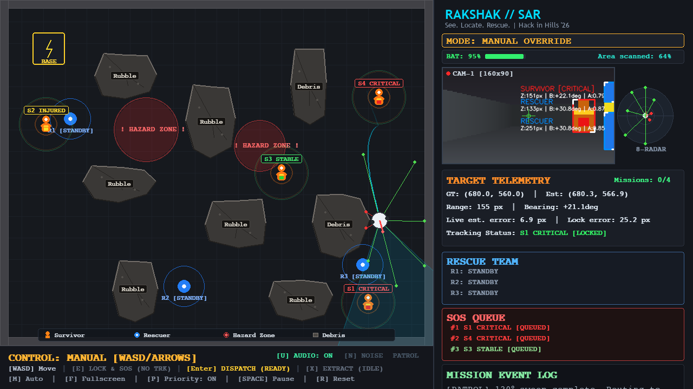
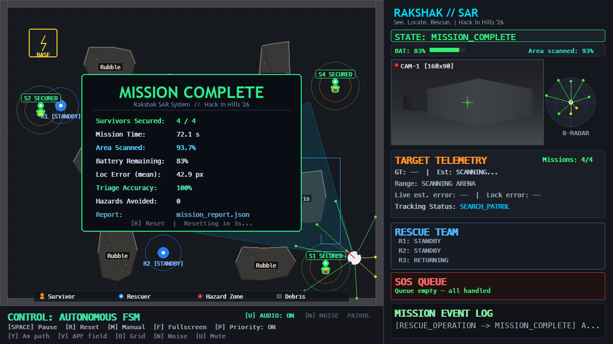

Demo

Rakshak is a Python/pygame desktop simulation, so there is no hosted web app. This page is its project page.
How it works
Coverage-guided patrol
The scout sweeps the arena, favouring unseen areas, and returns to base when the battery runs low.
Honest vision
Severity (CRITICAL / INJURED / STABLE) comes only from the camera's perceived colour label, decided by an 8-frame majority vote and then frozen. Ground truth is used for metrics only.
Track and estimate
Range and bearing give a position estimate, and a tracker refines it across frames.
SOS priority queue
Located survivors enter a queue. In priority mode, critical cases are served first.
Three rescuers
Free rescuers are sent with A* path planning around rubble, debris and hazard zones. Stuck rescuers replan.
Standoff and extraction
A rescuer reaches the survivor, extracts them, and returns to base. The mission completes when everyone is secured.
Screenshots



Results
All figures come from our own seeded benchmarks, run in a terminal. Reproduce them with the commands below.
| Default mode (rescue as found) | 20 dev layouts | 100 held-out layouts* |
|---|---|---|
| Reach rate | 20/20 | 100/100 |
| Collisions | 0 | 0 |
| Lock-time error (median) | 8.25 px | 8.28 px |
| Rescue standoff error (median) | 2.50 px | 2.47 px |
| Triage accuracy | 100% (25/25) | 96.6% (112/116) |
*Held-out layouts (--layouts 100 --seed 1000) were never used for tuning. They were measured on an earlier commit of the code.
| Priority mode (demo default) | 20 dev layouts |
|---|---|
| Missions completed | 18/20 (90%) |
| Survivors physically reached | 75/84 (89.3%) |
| Layouts with every survivor reached | 14/20 (70%) |
| Collisions | 0 |
| Median mission time | 62.1 s |
| Median rescue error | 15.86 px |
| Triage accuracy | 91.5% (75/82) |
Priority mode does not rescue every survivor in every layout. See the limitations below.
Known limitations
- Priority mode leaves some survivors unreached in some layouts (about 89% reached on the dev set).
- Locks made at long range have larger position error (outliers of 50 to 80 px); the error shrinks to about 1 to 2 px by extraction in default mode.
- At long range, INJURED survivors are sometimes perceived as CRITICAL.
- Duplicate tracks can send two rescuers to the same survivor, and closely spaced survivors can be merged.
- Triage is rule-based colour perception, not a trained detector.
- It is a 2D simulation with a limited set of survivor spawn spots, so the benchmarks are seeded random layouts rather than fully unique ones.
Run it
git clone https://github.com/arpitb496-cpu/Rakshak.git
cd Rakshak
pip install -r requirements.txt
python3 app.py # interactive simulation
python3 run.py --benchmark # default-mode benchmark (20 layouts)
python3 run.py --benchmark --priority --max-frames 12000 # priority mode
python3 -m pytest tests/ -q # 97 testsRequires Python 3.9+. Controls: SPACE pause, R reset, M manual, P priority mode.
Roadmap
- Port the logic to ROS 2 and test on a real robot.
- Replace colour-based triage with a trained detector, using real camera data.
- Fix duplicate-track handling and improve coverage of hard-to-reach pockets.